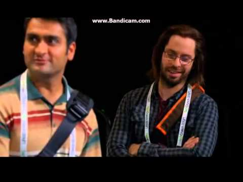

2024-01-05 13:32
It's the start of the blog, yaay!
How we doing? It's getting real, real fast. Miss some already, it might get only worse, or not... we'll see.
2024-01-06 21:36
Everything is crazy, homesick at home yet I wanna leave so bad! Tomorrow big time! (added Spotify links, songs everywhere! Good job past me)
2024-01-07 21:09
🇨🇭Successfully - landed, unpacked, called. So it begins. Started well with trip from the airport (glad for Eva). Room needs small improvements (bigger ones wouldn't fit).
Gonna cut first night short hopefully. A lot to come tomorrow and I must be able to talk without much thought. What's on my mind?
- How is everyone going to be.
- How lost am I going to be.
- I hope there is a gym nearby! Gonna search for one later.
- What is the golf course like! :D
Glad for 🦆❤️ for staying with me at the airport! The best I could have wished for!
2024-01-08 20:56
What a long day ha!
8:15 morning meeting - the journey there was spooky because of bad routing, the meeting was amazing, met a few poeple (Portuguese Peter, the IT data girl).
Meeting the team was bit quicker than I would like but got along well enough I would say. I'm probably the youngest, with Amy the only other one who is not physicist, alone in IT stuff.
Lunch, back to back coffee breaks, Magda showing me around (gotta find her paper again), A. showing me lab and our first rubber duck session on serial comms. Looks like a pain of a problem with little to no debugging potential, hopefully gonna be able to fiddle around a bit and get it working.
Probably gonna be making new website, should look into that (some state of the art html source). And some simpler Python thingies.

2024-01-09 16:12
Hey there! Bunch of mails done today, M. is pouring info and there's still more to go. Went to the 275 lab this morning, saw mountains for pretty much the first time (the view is much much better than what I expected). Had small debugging session with A., had zoom calls about bunch of guys speaking french..., lunch and more debugging.
A. gave me access to the universe amount of data (like wtf is in 19PB of experimental data and WHY THE FUCK is it in single folder somewhere AND WTF AM I DOING WITH ACCESS TO IT IN CLOUD!!! ... like, I'm not touching anything but just saying).
Did some search for the problem, helped to solve it finally after she was stuck on it for weeks probs. God I hope I'm gonna be useful here (that felt nice)! She's probably gonna let me fiddle around with much more from that one so I should try to read up on electromagnets lul.
About hour more and home we go.
Also... got mail from M. that we are advised to go home and work remotely because of the snow :D Interesting.
Also this is playing on repeat :D
2024-01-09 23:22
Well I wanted to go working out to Bushido Gym. Such a nice place and the guy does only 1on1 sessions. Bummer. Gotta get on the bike thing tomorrow (not literally yet).
Looks like I'm gonna be learning javascript for web dev project. So even this website might get a facelift who knows.
Well GN and let's try for a gym tomorrow after work!
2024-01-10 23:53
Good evening! Day pretty much successful. I am pretty active in helping A. with the project. And she's having problems with such basic stuff (not meant bad, she is not supposed to do better, she did great already with the amount that she has written). But I feel like I could help more. Still feels good that I can solve whatever she throws at me.
I was told that I might be able to participate during some of the ZULF experiments if there is gonna be python shenanigans happening! That would mean going to the Geneva hospital and doing something around their own small accelerator!! Cool!
Started working on the website. Pain. Gonna continue tomorrow.
First time visiting the gym here! Gotta search for another one, because this one costs a lot (25 CHF per visit/125 I think per month). Could do montly, but would probably be better to look elsewhere too. Did chest, 100 bench 2x, 1x, bunch of 90, 80. NOBODY KNOWS ANY ENGLISH, WTF!!! Was spotting the younger guy who spoke only french. Like cmon learn some english as well, what are you doing. Was happy with how it went tho.
Shower + Sleep! Cy@
2024-01-11 23:33
Day that went away quite quick! Work was great, I'm useful there and there are more projects to come.
Spending time with A. on the project, I would like to help more but not forcing anything. I mean it's still a project that funds everything that she does here. So surely she wants to work on it by itself.
WTF that powerlifting belt. There were some visible hints but that's so cool! Gonna have to try the CERN gym xD
P.S. Don't try the burger again! It's really not worth the money.
2024-01-12 22:50
First friday, first weekend incoming. The week went by super fast. Spent the day struggling with the website kinda, but got a lot of progress in. I would just hope to code it up all by myself. But first reactions were nice. Got the views going at the end so it now seems like I know what I'm doing. Found out that A. had the phd done in Oxford from what it looks like, just wow.
Have seen the french mountains clearly for the first time!
Great to talk to that Netherlands guys. Also Monika was one to talk to as well. Probably gonna work with her more during the Vito web dev. Also stoked about the next task (hopefully CERN approves it - learning JavaScript gonna be interesting but not as hard I think).
I was the luckiest, late registering for the BBC podcast event and was able tob participate! What a lucky thing, like 800 people with really well known faces in the front. And most of the audience were CERN guys xD That's some audience as well (I really gotta get my own trip to the LHC done, because that would be a shame not actually seeing the big stuff).
Adding some images from the podcast event and on my way home: (also the gallery idea is not really bad - could use the slick library I found out about)


2024-01-13 23:14
First saturday, first walk through Geneva, first shopping madness at the end of work day in coop. Geneva was cosy, not big, walkable. French is everywhere! People actually don't know much english. I started doing french duolingo course xD. Tried going to the Saint-Genis gym. Man they should really know a bit of english everywhere...
Geneva was nice, look at some of the nice images.


Sunday is about trying to find suitable gym. I already know about a boulder gym and that is gonna be a plan for sometimes next week probably. We'll see what's the program. Also I should look at those indico events, because there might be something interesting that I'm missing.
2024-01-14 18:40
Soo no workout today, weird membership rules so a new member cannot go anywhere just to try it once. Swiss people actually don't work on weekends. But I was fortunate enough to have a bouldering gym pretty close in Geneva. And that's gonna be a great place where to spend some time (even on Sundays!). Light blues and one dark blue done today. Although I was getting embarassed by climbing kids as always. Talked a bit to these two in CERN student girls and they were great. One was getting seriously close to embarassing my climbing too. But luckily I showed off well.

Not gonna work much more today. Will get a dinner in. And probably look at some javascript thingy so I know what I'm getting myself into or I try to look for some ways how to try and solve the ssh connection task.
Also I saw mountains on both sides for the first time! What a moment. The area is much mountain-y than what I've expected.
2024-01-16 00:10
Hey there. Just one late entry before the bed. Had my first monday report today. Felt like I was looking for words but it went ok. A. is giving me more programming tasks.
I became the master of cernoverride theme and hence the master of css. The site is gonna look good! I never knew the strenght of nautilus mounting.
Also went for the Bladonet nonstop gym and that's probably gonna be the gym to stay in. My legs are so sore! 140 squats without belt for twos. Felt really good. Place bit crowded but it never really stopped me from doing my stuff.
2024-01-16 15:55
This day takes so long, maybe because I'm basically alone here. Meeting is coming up shortly. I've done some good work today, the DB is waiting for approval, been running around asking questions and making stuff done. Will finish the day with looking at c++ resources for A.
2024-01-16 23:21
OK so the meeting was really something. It was a safety meeting mainly because of the fiery 24/10 incident with Ita. girl (the name of whom I'm still missing). It looked rough for everyone because of the safety procedure changes that have to happen. It didn't sound that unreasonable, but I can imagine that those clever minds can think of something just on the spot (just as I do while working) that really has to be done in the moment and this kinda sabotages their work.
Hopefully they get together to generate something that helps everyone and doesn't threaten ISOLDE anymore.
Lidl shopping is goated. First chicken breasts today xD. Loved that. Would use some more cutlery, but I managed.
2024-01-18 00:41
An interesting day. I was pretty useful, almost finishing the N. visualizer project. Ending the day with actual python script generating real time data for the DB and visualizer working as intended. Probably gonna implement it tomorrow.
In next few days, I'm gonna talk to M. about the website so I'm a bit nervous but I think we will manage together.
I really like how much I need to go around and communicate with others, because I always feel like I know only half of the needed informations. And it's kinda like a game, figuring out all the necessary pieces to put together. Real team work feeling kinda.
I opened my SWISS BANK ACCOUNT 🇨🇭 today! What a weird student's life this is. This is like a whole adventure. I'm glad that I'm keeping up with this blog.

Finished my day with gym, chest day. I kept my strength mostly. Why are there only 37.5kg dumbbells in the gym. I was already repping that. We'll have to do some harder exercises with those ones. Other than that, I looked PEELED AF.
2024-01-18 13:08
Afterlunch one. Tasks flying, zoned out with the website, N. comes in with Python requests. Still making improvements on website. Now gotta prepare the final version of everything for visualizer. It's like a game. Need to minmax all of it.
Started talking a lot with most of the guys at lunch. Feels like I'm slowly getting tag of the regular one and kinda a part of team member.
2024-01-18 23:13
Evening entry. We have the test visualizer running :D My man is pumping it with data 2 random doubles + time code + maybe something else every 200ms. We already have some improvements for it and there are guys in the office looking to get something of their own plotted as well. I might set them up for something too.
Finally bought a cutting board, the living conditions are slowly but surely improving. Also, found use for my first lessons level french in shape of Cheval steak in Carrefour 🐴.
Also, this song might be a theme of this whole trip. It came out like a day or two after my arrival and I'm completely hooked.
2024-01-19 23:45
End of the second working week. Clouds went finally away and it look awesome! TODO: add some pics! Also tried to get the bike sorted but that went south real bad. How does an atm not have enought money...
The visualization app is running, although there is a problem on upload (not on my side I think). And I had meeting with M. about the website and we finally have some contents for it. She has some really ambitious ideas for it. I'll try whats possible.
I'm going to look for some trips around the area. Gym tomorrow for sure!
End of the second working week. Clouds went finally away and it look awesome! Also tried to get the bike sorted but that went south real bad. How does an atm not have enought money...


The visualization app is running, although there is a problem on upload (not on my side I think). And I had meeting with M. about the website and we finally have some contents for it. She has some really ambitious ideas for it. I'll try whats possible.
I'm going to look for some trips around the area. Gym tomorrow for sure!
2024-01-20 17:22
I'm home from a first little trip of mine to Jura mountains. And I'm so glad that I went. It was pretty cheap and quite easy to get to the mountains. Most of the time I was choosing pretty nonsense tracks for myself. It was a weird feeling being there just on my own. Felt kinda awkward for a bit. Gotta add some of the pictures.


I'm gonna go for a night gym session later.
2024-01-22 10:56
No entry from yesterday, but mainly because I did almost nothing. Free day is fine as well (probably). Listened to some IT stuff, I feel like doing some kind of GPU raymarcher or voxel engine of some sort with physics and raycasting (yeah influenced by teardown for sure - imitation is the greatest form of flattery).
Called with 🦆❤️ as always! I'm glad for her.
Also played around with this blog. Now know how I'm going to do img galeries, it's now just a matter of choosing nice way of implementing it - struggled with picture height/widht.
And I've started watching a bit of netflix in the evening! xD Started the Full swing series about golf (drive-to-survive-like). And I was very impressed. So I'm probably gonna look at that more.
NOW... It's Monday my dudes. Actually I'm really happy at work! Looks like some new projects are slowly coming my way. We just had meeting with A. and M. presenting their projects. A. measuring interfacial ionic conductivity in SSB was like just beyond what I could have understand. But I think with couple of searches I might get on top of that and it really sounded like a big great thing. Actually a project where I can see a work on something tangible (althought, nm of ssb xD). But it looks like some future tech which I would have no clue about otherwise. Glad to be here with them.
Gotta go work on line fitting c++ before the lunch guy comes :D (muffin man: the lunch man).
2024-01-23 00:23
Another Monday. What an eventful day! Got my credit card (made of cornstarch for some reason). After last entry we almost immediately had lunch, I went to work for a minute and Marius was heading away with Daniel to CMS for friendly excursion. And stuffed happend and they had one free spot which he gave to me. I'm so greateful. That was amazing. Gotta add some pics later TODO: pics.
Stuff like science fiction. 100m underground, built on top and with crane took to the cavern. Crane was used to build the South African(I think) football stadium roof in one piece. Detector was huge and we saw it move. On freaking howercrafts xD ...scientists man (I'm kinda part of them). What a job to have. Guys looked like regular technicians but must be so into what they are doing and on another level. We also got to see mockup of the LHC tube which gave me a better idea of what and how it actually works.
Got some work done in the end of the day. Ahhhh got my bike (#2277) this morning! 100 CHF deposit well spent :D It looks sick!
And did a evening (late evening) workout. It all feels great, but could be better in there. Maybe in the next days.
See you tomorrow!
2024-01-23 23:43
Well today was more about programming than any other day xD I was deep in C++ the whole day. Trying to figure out how to compile those three libraries together. Line fitting is gonna be in my dreams now. However, I think I figured what I could do to make it work. Gonna be another day of cpp and that's fine!!!
Other than that I was fairly lazy. We watched another Black Mirror episode (I think one of the worst episodes tbh). Bought some stuff for mornings, kikoman for the rice and more pasta :P. Miss 🦆.
The bike is amazing tho. I almost came late for work because I just knew how fast it's going to be.
2024-01-24 22:46
Quite a long day because I made it that way xD. Had a lot of fun with C++ in the past two days. Have been working for A. on her line fitting and it just couldn't compile together. So I tried to do my idea from yesterday and it worked. Self-contained my ass, now it is truly self contained... Producing 3.5k lines in 2 header and 1 cpp files. BUT it works without any need for some fancy special compilation. Great! A. seems to like the outcome. Quick scripting around and we were plotting different spectra left and right!.
Quick cycle home and back for gym. Quite a strong back, but cannot shake that idea that I lost size in the back. We'll see.
I was able to get a place at ATLAS guide for this friday and ALICE with Lisa for early February! I'm probably gonna be able to see all the experiments I was looking forward to!
2024-01-25 23:50
First half of the day great, second half meh. At least of the work part xD. Did some improvements for C++ and I loved the way it turned out. Everyone is on safety procedures so I wasted some time with the website (gotta add the content first before making it look pretty!!).
The weather is finally getting better! We get full days of at least partly blue skies! So mountains are always visible and the bike rides are amazing.
Made some calls and did some bouldering afterwork. I moved up to a higher tier (dark blue me)! Still there are so many better climbers that do it so easily xD it's insane!
Friday next!
2024-01-27 19:24
No entry yesterday. Just because I was so tired in the evening I was happy to persuade myself to go to bed. Friday was pretty sick (in a good way). Killer leg workout, 160kg clean. Guys were crazy, but it's nice exploring new workout routines.
Work was awesome. Pretty much all day spent with A. on C++ problems and changes. And we again did fair amount of work which is always great! We talked about gym as well and she might take me to see the CERN gym. We can surely talk more gym later. We seem to get on well.
Also was to see the ATLAS experiment on Friday. Great presentation to actually understand what happens inside of it. But in comparison with CMS a bit underwhelming. CMS was just so cool that you could actually see inside of it. BUT there was a rubber duck inside of the control room (TODO:pics!) There we met with a few people around my age that also do technical studentships and are mainly into IT. And I think I have pretty great position! All the other guys seemed a bit fed up with their mundane tasks, which have no clear results. It feels kind of special for everyone that I actually am in an experiment group with experimental physicists.
TODAY (Saturday) was quite lazy for most of the day and then I went for a trip to Migros in Thoiry. Didn't buy almost anything and spent there like an hour just to go through everything while talking with mum :D That was great.
I did some accounting for the past 20 or so days that I have been here. And it seems like that I'm gonna be fine with the money. I spent a bit more than what would be usual for my normal month (I think) and I'm still well under the budget 💵.
I searched for some golf courses and it seems like there are few really affordable. I gotta get my clubs here and practice and play! That would be amazing! Having like 10-15 rounds of golf during this trip?? JUST IMAGINE.
Finished my day with wraps and Sisu :D The most bloody movie I've seen in a while in which the main character says like two sentences. That was something else.
2024-01-28 18:12
Loundry is done! Hate it! Struggled to figure everything out as there is nothing in english... But made it work and blacks are black and smelling good!
Gotta get dinner soon, wanna look at the CERN golf club when I now know a bit more how everything works. Pretty excited about the golf courses that are around so would be great to get the clubs here. And want to look at raymarching in GPUs for possible raymarching project.
2024-01-30 00:15
Another Monday! The day went away so quick! I did almost nothing and still was productive the whole time. Weird days! Went to visit the NTOF facility with other ISOLDE people. I'm not one of the nuclear physicists so it wasn't aimed at me that much, BUT I think that I saw what F.Mraz was telling me about (TimePix something device -- calibration of beam and laser?? or something like that from what I talked to the head of NTOF... which is also crazy). Lab with the most RP precautions I have seen to this point. Also this AL^26 story xD Kekw
We tried to work on magnet with A. but we got a leak. Before that we saw a correct signal so that was positive!
End of the day was quick. With a few french phrases from me, M., I. and A. :D
Plus gym (filled but ok... headphones dead :/).
There's a farmers strike tomorrow from 9 in the morning. I'm interested if I'm gonna see some of them xD
Life is good See you tomorrow!
2024-01-30 19:21
Tuesday! I'm still waiting for the PIN for my card. Hopefully that comes soon. Spending more and more time in the 275 :D. The C++ is always trying to argue but I've always managed to persuade it somehow. For some reason A. thought that I'm staying for only 3 months, so got something like (cannot you stay for more than 3 months -> oh you are staying for six :D). I'm really glad to be useful to others.
LHCB next. Met Fatimah and Enrico together with other guys from the visit. It was quite a tiny detector compared to the other ones (but the lowest I've been -- -108m). Detector for only one side of the collision and the huge rotor-looking thingy on the other side. CMS still rules as the best I would say.
Lazy rest of the evening.
2024-01-31 23:21
A long night with gym ... deadlifts -- 180 without a belt, 170x3 without a belt, felt really strong just having to focus on streangtening my back as much as possible so it does not move! Not the greatest thing for power but I'm gaining confidence in those lower weights.
Pizza (tuna with red onions -- never seen in CZ) + chicken now :P.
The working days are going so fast now! Every day I'm at least once in the lab. So there's c++ always on the menu. We are starting to make it work. Major unexpected problem with the fitting as the data was nowhere close to being fit correctly. The data is just to dense. Main peak is around -3500 which is so much further. Worked at the end tho. Plus almost all the python is now transfered!
2024-02-01 23:43
These days I'm more in the lab than anywhere else. C++ is always throwing rocks at you but we are fighting well and it's moving! I was interrogated by M. about the progress and at the end of the day we showed her some of it. It wasn't perfect, but seemed alright!
Also did some lighter leg workout... cos my legs are still burning from last friday!
I'm looking forward to 🦆❤️! She's here in a minute! We called as pretty much always and that's always nice to hear!
2024-02-04 01:49
Late saturday entry xD No entry from yesterday as I was expecting 🦆❤️ and had no time afterwards to write anything. Was really awesome to meet again! More left for the memories...
Today we were lazy, had lunch, walked through most of the CERN and R1 and our offices, seen everything outside of the Meyrin site at CERN, went to Manor for coffee and visited the best light festival ever (Geneva Lux -- possibly the 10th). It has been great having her around again! Made dinner and watched Your Name. Lovely movie.
Such a long Saturday! Loved that. Bit of a shopping and climbing tomorrow :).
2024-02-05 08:43
Monday morning! Nothing from yesterday so here I am. It's not that it would have been super busy or anything like that. It was just great having her around and I didn't spend any time at pc. We stayed in mostly, went shopping for a bit, had great lunch and went to the Totem bouldering gym, which went very well.
Today she took me to my work and we left it off there. See you soon, hopefully!
2024-02-05 20:49
Another Monday!! Lab work continues, but the stabilisation was running today! So big improvement. They always come at the end of the day to keep me there longer than I would like (but I like it). I know all of the c++ project now so the work is actually so good on it. And I have ideas how to improve fitting with some smoothing things... Gonna be great.
🦆❤️ arrived home! The weekend was something that I really needed! We started watching One Piece yesterday and it is surprisingly great. I should probably give more on others opinions about these shows! They are actually fine.
Wanna look into c++ RayMarching for a bit! Tomorrow probably fast shop and gym. See you then!
2024-02-07 00:07
Tuesday done. Work had not much programming, but I was a plumber, a solderer, a cleaner and a technical mover when we were moving and securing the magnet again (and I did a bit of programming :P). TODO: FINALLY ADD SOME PICS FROM THE WEEKEND SIGNAL FESTIVAL AND FROM THE MOVING.
Went for a gym and missed 100kg bench and hit 5x90 afterwards... wtf. Not great, not terrible... I think I might go for a creatine tomorrow. It might have some play in that as well.
Did a small shopping, mainly for meat. Got 2 packs, 1.6kg of chicken. Gonna last three days at least on that xD.
And why am I writing so late??? I was cooking and met Armenian (I think) guys (brothers... I think). And we spoke and spoke. Both learning english and french at the same time. [Lufi] and [Abus] (31) are amazing! Drinking the whole time but amazing xD - [Bon chance] - [Bon courage] - [a bianto] - [été] ... wtf is that language man ... summer - [iver] (hiver) ... winter - [moa] (mois) ... month - [automne] ... autumn
My true first french lesson comes tomorrow.
2024-02-07 10:01
Finished all of my online lessons. Have to get safety stuff, dosimeter, and full day RP/Electrical courses and we are done xD So much safety to do...
2024-02-07 23:12
First french lesson :D That's gonna be some fun. Guy speaks really a french-english and french so it's like 50:50 foreign:foreign language lesson. Which is awesome! Other than the obnoxious german guy, everything was amazing!
The work is slow now. There's not much to do on the magnet because it does not work again. The water leaks fixes and subsequent upgrades did not help much and actually made it worse for now. Hopefully it gets better soon so we can see the stabilisation in action!
Gym felt good, back day, full of energy, good! 3 sets 90kg bentover rows. Felt good.
Another long distance call and OnePiece!
Also my YoungLa stuff came this morning! Gonna get them tomorrow (Clothing show tomorrow? :P).
2024-02-09 00:16
Hey I got my new gym gear! YoungLA is freaking goated. Everything fits perfectly (for my own liking). And the double layered shorts! Goated.
Work was feeling slow today, but killed time with website (filling up profile pics with xkcd memes xD). Preparing all of the content already. Probably gonna spend tomorrow with it as well. Also, wanna get my dosimeter tomorrow morning. ANd hopefully find some spot for earlier RP course than 2nd of April xD.
Ended the day with another OnePiece and some french.
And probably late gym tomorrow if I may guess. See you then! Bye.
2024-02-10 00:21
Long day but just a quick one. I was fortunate enough to land a spot on a trip to Ostenensee (maybe) with a couple of other guys! BUT it's really ealry in the morning... Sooo gotta hit bed asap.
Work was weird! Magnet worked, then everything worked, then motor started doing weird things... nwm, I thought I knew the solution... lunch and the spectrum is nowhere to be found!!! Got my dosimeter today tho!
French... man who designed the numbering system. above 60 it's sum... above 80 it's partly multiplication WTF! Language sounds great tho and I love to add new phrases to our convos with Lufi (he's probably gonna be the king of the pirates xD).
I did a leg day today! With my new belt and shorts!!! Ohh I love those! 150kg squat, 140x3 easily. Felt alright! Met this guy whose name I can't come up with atm, super amazing english, great squats. 55 year old english teacher in Geneva, absolute beast! Sporty, did squats with like 105/110, then went to bench 3x5 100kg pretty much close grip bench like fuck yeah! Gotta talk to him more! Also had a silent, distant moment with an gorg asian girl when we crossed paths at CERN in the evening. Guys were going out and I was returning for my bike. With the size of this thing, I'm probably not gonna see many guys more than once xD Probably should talk to everyone interesting the first chance I got.
See you tomorrow! Gotta wake up so early!
2024-02-11 18:46
Sunday, nothing yesterday as I was happy to be happy. Woke up super early to meet 4 other guys at Carrefour and go to see on really really snowy adventure. Nice hike although we could have gone a bit further (batter safe than sorry).
Today I took my window blinders fully down, so I slept till like 10:30 with no problem xD did laundry, looked at french stuff, played arround with CUDA (need to find some sample projects for cuda opengl interopt). Pretty nice calm day.
Played a bit of Shapez and got hooked on overoptimizing everything xD Not a game for me probably... For some reason, I'm getting insecure feelings about stuff... but probably that's just my weekend brain going over the allowed limit of thinking time... I'm planning a small surprise for 🦆❤️.
2024-02-12 22:23
Monday! These always go away so fast xD Morning meeting with M. on zoom was fun xD Bit of talk about github, lunch and solving problems with magnet. (The spectrum is shit... btw it's there...). French was good but spent some more time in lab while we were solving the magnet problem (Mik f-ed up probably and ruined one of the pulse generators :D). Should be fixed and looked quite good already!
Finally joined RP course (8 hours), and I'm doing electrical course tomorrow! Gonna be interesting!
Hit gym, was really strong again! 100kg bench good, 37.5 for bunch of reps and sets like nothing!
2024-02-13 22:13
Tusday was fine. The magnet is working again!! So the work begins... unfortunately the serial connection on the arduino motor is shitty and there's some work to be done with it. I'm probably sinking a few days into it.
Other than that I went shopping and had a lazy evening with a bit of reaserch to cuda stuff and Full Swing videos.
2024-02-15 00:20
Valentine's day! Everything arrived well :) Glad to make her happy with small things like that! Was waiting till 4pm. the whole day... so the day went by fast! We finished the live action One Piece xD Onto the anime now... xD
French was interesting and I feel like I'm slowly getting into it! I'm surely not the best there. There are guys with latin knowledge and much better pronunciation (I think with some french background too). But I'm getting the words in! Trying to get some lessons every other day so I see it every day.
At work, arduino motor is killing me, I made some progress but it's the only weird serial comm which doesn't want to behave. There are a few things to test so I always have something to try! Other than that, we were able to run the stabilisation so progress!
2024-02-15 23:13
Back was really exhausted from last nights gym - deadlifts and more. So I'm staying at home, cooking and being lazy. I found some interesting Cuda+OpenGL projects so I might try to work with them.
I love how often I get to call with everyone! 🦆❤️ pretty much every day these days!
Achievements at work! Stabilization ran for the first time for a long long time. We are in area of just fixing corner cases, which break the comm once in a while (haven't happened in a while). The arduino sucks, but we are handeling it! Lovely encounter with Nik. yesterday when we got blame for him disconnecting his own under current cables. It is a great fun with A. these days! Had birthday yesterday so seemed under the weather xD It was a fun day!
2024-02-17 12:37
I'm up! xD Friday at work ended up with French lesson and Francesco offering me and the indian girl their party that night! So I took Gin, got gym in between and went there (in SG).
The house was packed! It felt like a premium MFF party xD mainly guys, some girls but at least everyone was quite talkative. Had fun. Talked to a few gym guys xD The Estonian was really funny. We met with the US(Jeevi)/ITA friend pair and other than the unreasonable tremblings for weed, they were great. It was the ITA's girl first night at CERN, visiting her brother :D. Drank a little but nothing crazy! Everyone was going arond 12-1, I went around 2 and was still able to cycle home. Completely fine.
Gotta be a lazy day today, but still want to go climbing today!
2024-02-18 01:26
Lazy lazy saturday xD Bit of search for my next graphical app, shop, lunch, call (we are thinking about timing on Dune 2), boulde, I did another dark blue and new routes! And kinda injured my left ring finger a little on two hole pocket and move to the right side. Immediate pain, was able to continue tho. Some tendon shit probably. No big deal, can't push straight into it but again, you can't otherwise even when it's fine xD. All good.
2024-02-19 00:20
Sunday was fun, finally did some stuff on the raymarching algorithm and it looks goood on gpu! Did some meat prep, gym and looked at golf stuff. If I don't receive an offer in next week I'm buying them on my own because that's just horrible way of dealing with stuff and at the moment I REALLY don't care about saving 2k to wait another X weeks.
Learning more french. Going great! fluent probably in no time xD
2024-02-19 23:26
Monday heeeey. It went by so fast again xD Maybe because of the 1.5h meeting and 1.5h french lesson and 1h lunch xD. Had few trips to 275 with A. and a little programming and git workflow was done. Currently working on new branch to improve and clean up all of the things I can find. No way of testing which makes it quite fun tho...
French went fine, although I was really exhausted for some reason and couldn't concentrate much. Did time and it seemed alright (IF YOU KNOW NUMBERS WELL). Spoke to the Indian girl and we might be able to get some bouldering session in together (there is supposed to be a climbing gym in SG as well!! we'll see...).
Other than that we have planned (after a long thought) a weekend home visit with Anička. Airplane prices are a bit steep but hey... you got the money, why not hey.
ALSO the callaway XR 13 seems like a nice choice. I might get that one, if there's a reasonable price on that.
2024-02-21 00:22
OK on friday I'm flying home! With 🦆❤️ as well!
The day was full of programming, refactoring the stabilization code. We'll test it tomorrow. Looking forward to that, because I feel like it must have changed a lot, but I had no way of testing xD So programming in blind.
Gym-chest was alright... although bench is not as strong as I would like... did 90kg for 5,4.5,4.5.
We have watched first anime one piece! (One Pace actually) And it trully looked like a pokemon xD Feels interesting.
2024-02-22 00:22
Hello, I HAVE FIRST CERN MERGE xD seems like nothing, it is nothing, BUT sounds cool! My code works, it's faster, better, cleaner. Mornign was slow but after lunch we made everything work and it felt great!
A. played the Barbara's bombastic Rhubarb pie... and it's horrible... FUCK IT, I'm gonna link it HERE xD
French was quite fun. Ended with the german guy complaining about trafic. We had great time with the indian girl just laughing at him. She finished him by you would die in India. BASED TAKE xD
Gym after, legs. Why do I feel weak when I'm able to do (on the way up), do everything, 4x140kg, 3x1x150kg, 2*9x120kg(till fail), (10-15)x100kg. STIL FEELS WEAK WTF! finished with all other parts. Huge pump tho. It's probably fine! Need some sleep now tho. See you later!
2024-02-22 23:55
Just finished a little fun talk with 🦆❤️! Love!
The day was quite long but maybe I'm already looking forward to tomorrow :) Full day of rain so everyone stayed inside, no lab, just programming and fooling around.
No gym, but a quick shop and calm evening. See you at home!!
2024-02-24 12:15
HEY, I'm at home! Nothing from yesterday, the work day was quite nice, work on my own NVIM Lua config, then did some work on CPP with A. No french lesson unfortunately but was able to leave a bit earlier and catch my plane home.
Was able to get from work through airport security in less then 30 minutes xD Absolutely amazing. Still had an hour to wait on the airport because of the gate closing policy... kinda dumb. It would be great if it was possible to close the gate like 10 mins before and that would make it much quicker for some. Parents picked us up from the airport. Funny that the air travel was exactly a half of the journey xD
Great to be at home. Had much fun with 🦆❤️!
2024-02-25 23:51
Heyo, I'm back at Geneva (Fr actually). The flight was awful xD but still better than anything else! Like 2-2.5h delay because of plane's technical probelms in Barcelona before Prague... Interesting. Although I was able to spent a bit more time with 🦆❤️ and I've been really enjoying having her around!
I brought DUNE book with me. And immediately I was able to read a bunch of it again while waiting for the plane and on the airplane. Other than that, the trip from the airport was rather uneventful.
The weekend with everyone around was really amazing! Although I feel a bit bad that I cannot properly talk about everything that is happening at CERN. While I'm still really interested, I really am missing some stuff which are just kinda out of my league... I'm gonna try to learn a bit and maybe I'm gonna be able to talk about more interesting stuff on the next visit :).
2024-02-26 11:26
Got a low level Gamma MRI description from Mateus and that was lovely! Must explore the website more!
The quartz tubes are filled with xenon and activated in reactor, shipped back, tested for contaminations (of tubes), tested with gamma spectroscopy, then crushed in vacuum to move to another tube to be then used in Gamma NMR for improvements with polarised stuff...
2024-02-26 23:08
After gym - finally hit 100kg for 2 on bench again! ALSO I weighted in at 80kg. Eating properly pays off looks like.
It was pretty strong. Probably the lazy weekend at home and sleep works well xD
2024-02-28 00:04
After One Pace post. We got another episode in and it's getting better and better!
Did pretty late gym today. Wanted to try 200kg deadlift... Legs weren't there yet, probably still not 100% from last leg day (last thursday I think). 190 went hard. 170x3 good.
Work was fine, bit of setup work (TMUX and stuff), trying to get my VM started to install QT creator for myself and some PICO5000 work - it sucks xD Everything is an unexpected behaviour.
2024-02-28 15:53
Just talked to M. about different LHC stuff (my dumb little questions)... SOOO:
- ISOLDE is one of the lowest energy points of the beam because we are basically the closest to the origin (1.4 GeV),
- BUT because of that we are getting like 50% of all the particles (as I was told),
- at the LHC things are bit more interesting (~14 TeV - 7 + 7),
- the particles need time to saturate the LHC and get to the speed, they are being fed in and accumulated and sped up AND then collision are set up to happen,
- soo collision events are happening for like a few hours - until they decide it's not worth it anymore and saturation starts again,
- also the collision events are pretty much probabilistic - meaning that they are happening all the time (possibly at all places at once - in LHC) BUT as it was described -- hitting two particles together is like trying to throw two needles across the Atlantic and hit them streight on,
- also cool! when it is not worth anymore - for some reason - particles are dumped (you guessed it) into a beam dump xD M. said that one of the towns/villages nearby is actually partly running their heating using the heat from the particle dump (the only source we found atm is about the water being used -- link).
2024-02-28 23:40
Well, today was a good day, calm evening with shop and then dinner and nothing. Stayed a bit late at work, just talking with M., I. and D. about everything funny beamtime.
I missed the french lesson today... I was so caught up in the work (was doing bunch of great pointer magic and I managed to make it work! VOID Pointers suck it!!). So unfortnuately but hey, don't let it stink that long. Tomorrow there is some emergency Python coding because A. and M. were in the hospital and Python is throwing some errors! Let's GO!
Have been talking with M about LHC (see up for more ^^^).
Golf clubs called! They are on the way! XR13 stiff here we gooo!
2024-02-29 23:51
The Grand Budapest Hotel is amazing! Thank you M.
The day was lazy... I sunk it into the PICO5000 problem. In the end when I started to rewrite init, because I stopped trusting A's setup and she sat with me. We found the issue like in the second or third function.... Well I'm glad it works now. On more possitive note. It looks like I'm gonna be joining them in the Genevian hospital tomorrow to debug python on site! What a fortunate position that I am working at!
Gym was harsh. Bit of legs, tried squats -- did couple sets of 140, but sore back from last strength backday didn't allow for much. The other parts were fine and walking lunges as well. Might try to incorporate them more into my trainings.
Also A. invited me to ski with them on saturday! Time to scavange for approriate tools xD
🦆❤️ arrrived to Budapest today. Hope they are gonna be alright. She's the best I could have wished for. For some reason I'm not feeling 100%. I hope it all goes fine during the semester and that we can keep our long distance thing running well.
2024-03-01 22:49
Well what do you know, I was in the hospital today and I was somehow useful. A. gave me a short description of what we were actually doing. From what I got -- we are trying to do some kind of chemical polarisation (why is there hydrogen, amonia, other stuff, dunno yet). But the substance get's activated, somehow polarised and we test that polarisation on two detectors (counters). I have some pics from the lab (TODO: pics) and I felt like an astronaut in foreign lands. It was great! What an IT position.
I managed to make it back to french in time. I actually dind't lose much last time because we have done body parts again.
Afterwards we talked with N. for a moment and I went to Decathlon in Geneva to buy some ski equipment. BECAUSE I'M GONNA GO SKI TOMORROW! HELL YEAH!
2024-03-03 23:47
Sunday, nothing from yesterday as there was a full day of skiing and had no energy to do nothing else after that xD But it was awesome! We have really really great ability on skies. Timo has been said to be the best and I was way more in my own element around there. It was really awesome, had a great time. The snow quality wasn't the best, it was around +5-7 degrees all day so it was getting heavier, but I got a better set of skies (rent - Noir set/Black set). And I was fairly happy about my choice. (TODO: ADD ALL THE SNOW PICS)
Today I slept a lot xD but my legs were quite fine. I got a late lunch, decided to go for the Car Show. The main part was a little underwhelming, but the supercar section and older cars were amazing (TODO: again, pictures).
Got more hypertrophy chest workout in after that -- so I made it into a fully active weekend xD. Was really happy with that as well.
Nadin is talking with me again. I'm probably gonna help her with some IT knowledge towards her new job now.
2024-03-04 22:53
Monday and a fast day again. Long meeting with A. missing so b275 was directed to me xDD Actually had something to talk about. Other than that, flatbuffers started working so P5000 is getting data. Which is positive! And M. sent me first info about my next project -- UI for the magnet. That's gonna be a lot of reaserch from what it looks like now.
I had the last french lesson today which was good. It's weird that they named lune after croissant xD And we talked with Nyai and that was fun.
I found the equipment for what I need for golf! Gotta be a small shopping spree.
Back day, and that was alright. My back has mostly recovered from last wednesday or when that was. Felt actually pretty strong but the gym was packed and everyone was doing cables...
Also, the washing machines tried to fuck me over but I managed to get it done. Well, no washing but at least I got my money back... Gotta try again tomorrow.
2024-03-05 23:34
Tuesday and the work was fun. Almost full day spent with A. on software for counters (hospital stuff). AND WE made it work at like 17:45.
On worse note I might have shingles. As if it wasn't destined to be -- some problem on my half year stay here. We are gonna get through.
I have my plane tickets for Easter and looking forward to everything and Finja afterwards. Gotta get some hikes planed.
2024-03-06 15:52
FIRST Actuall case of testing from which floor the egg breaks. AMAZING!
Also I'm making our Italian friend into a cpp developer. Que the Silicon Valley "her java subroutine is so sexy" moment xDDD.

Also went through morning check at CERN and an afternoon check at the Meyrin hospital. I would say everything alright. It's not, doctor confirmed shingles for now and I have meds. That's the good part.
Back to work.
2024-03-07 00:07
Home, not doing much, but at least I know what's up with me and we can do something with it. Early night and RP course tomorrow.
2024-03-07 21:30
I am fully protected AAAND 🦆❤️ is here!
Well I'm fully protected! RP was fun. Went there with one Italian girl and like 6 firefighters. Pretty easy, advanced physics helped the radiation knowledge.
M. was bothering me a bit because the stabilisation software was not working. A. probably wrote the procedure a bit worse than it should have been for M. BUT it was working when I made it there... yes I was picked up and driven to 275 instead of lunch and got to debugging. The program ran BUT the fitting was acting up again... as the signal of 23Na is like 16 times lower than what it was before. So that's gonna be fun.
Love here.
2024-03-08 23:10
Well that was a long friday, work since the earliest morning. Today I worked in 2 programming languages, spoke about 4, worked on 4 different projects/codebases. So fun everywhere all the time. AND everything was successful for some reason xD I almost fucked up tho... Almost got rid of all the changes that Mark made to the pico script (somehow).
Then I had a company to come home from work with. And that was great change from normality.
Shop, cooking and movie. Nice evening.
The rash is really going away. Love that. Gym next week again.
2024-03-10 23:43
Sunday, had no mind on writting any entries when A. was here with me. We saw Dune 2 on saturday and that was epic. Thinking about rewatching it!
Weekend was great, although lazy xD Looking forward to more!
2024-03-11 10:45
Monday, ran away from the meeting to have a check in with the doctors. Blood tests fine. All well. Low testosteron probably, need to add some FOR SURE fr fr bro trust me!
2024-03-11 22:51
What a monday! Always feels great. After my blood results I came back to the meeting and immediately was mentioned as needed at few different places! Mich. said he booked me for the week and after lunch I. was like that she needs me for moment as well xD Love to be useful around here.
Went to 275 after lunch with Mich. We talked about the LHC and that was amazing!
- we talked about the syncronization of everything in LHC
- synced batches with 25ns gaps (I think) from the series of lower boosters and accelerators
- 8T magnets steering everything around (15-20 mins run-up time)
- about a 10% of the sinlge group energy to clench a magnet
- LEP - electron-positron collider - some energy getting thrown out when a charged particle is turning at high speeds (e^- losing about 10% energy a turn!)
- LHC - run up about 2 hours - longest stay about 2 days (1 days avg)
- the 900m abort gap - wtf - 3 microsecond gap with a synced power source which can come up in power in that time to charge a H-beam (type of thing) to induce small magnetic field to steer the particles away to dump
- facts and figures
- LHC wiki
WHAT A WORLD TO WORK IN!
Other then that I was able to help with the program for the counters for hospital fairly quickly. And was able to improve it, fix it up and speed it up. More work on it later in the week probably. There's bunch of redundant work that can be gotten rid of. Absolutely looking forward to tomorrow (with no exact plan... just love to go there!).
2024-03-12 22:58
Tuesday, fairly long, didn't want to get out of bed in the morning. So came into work completely gone with no energy!
Well, I. came :D And we sat down multiple times. Finally made her a proper developer experience with VSCode. She was doing CPP hardcore way in GEdit only! Brave one! She was so happy about the change xD
Would love to go to the gym, but I already told myself that I have to wait! At least till tomorrow and then we'll see! It all looks good.
Have seen first part of the Avatar yesterday. IT FUCKING SUCKED! It all felt so overdone and just fake!
2024-03-13 14:00
Hey guys came back from the hospital and codes for both counters worked basically perfectly for few hours with no delays and M. was really happy with how well it worked! Great one there!
2024-03-14 00:43
Dune 2 again, the only reason to come so late when you have to work the next day. I might be a bit psychotic, because I was hoping for all the bad things to happen to the guy sitting next to me! He was complete dickhead! Just talking to the one sitting next to him and just f** overreacting to something that is known to happen! Like wtf. Nevertheless, enjoyed the rewatch.
My shoulder is almost healed... so I'm thinking about gym tomorrow! We'll see at what time I get home.
Let's hit bed now!
2024-03-14 22:48
Finally went to the gym again! Chest day, incline didn't feel that great, but still did 80kg and was doing 8s of 70kg for sets. 35kg/hand on flat bench felt good for bunch of reps, flies, flies, presses, cables. Great pump when taking off the jumper! MORE TO COME!
Work is pretty filled nowadays. Working on the pico2000 still. Helping I. as she deleted 3 days of work but we got it back xD No crying yet! And we have talked the magnet project over with M. and now I have an idea what is there to do.
GOLF accessories came home! Looking forward to that A LOT!
And also... I was working a bit on my "Dunes" app, which is currently a height map terrain renderer but still cool xD completely different kind of shaders than what I have done before! (TODO: add pics of )
2024-03-15 09:03
You come to work and immediately you get new (luckily really small) assignments from Mag. and a laugh from Mar. xD as expected!
2024-03-16 00:17
Well I worked on a lot today! Mag. got her project even before lunch. Did some more pico2000 work and am still helping A. and I. with their work. I'm really glad to be this useful! There was a funny moment between me, A. and I. about the few deleted days of work and "OMG I. how have you gotten so far with GEdit" moment. Impressive indeed!
AAAND FOR SOME REASON, I'm chairing the monday meeting! That's gonna be fun! Like wtf what am I supposed to do :D Email sent so hopefully we are gonna make it through it in one piece.
Gym session again! Back focused, cables, Štěpán-styled and it was juicy. Came home after midnight xD So great! My happy meal got soked...
He says that he might have injured his back again... I hope he's alright tho so we can try some together here!
2024-03-16 23:02
Saturday! Lazy morning but I went out to Geneva in the afternoon. First to the Rituals shop for Čaky. And I think that I spent less than a minute in there. Around 90CHF lighter I came out with all what she wanted! xD So trip well spent.
Then I ran into a huge Palestine demonstration (I was wondering why there were so many people) xD
Did a fine leg day afterwards and I'm enjoying every minute of it Jerry xDD
We are talking/calling with 🦆❤️ a lot lately and I just love it. I'm glad we learned how to communicate in this way as well!
2024-03-17 23:00
Lazy lazy day. The laundry is still working only partly. I did bunch of work on my 3D env again. Now looks really really cool!


And some one pace again.
Found out that the people at Schuman's have rotated and now I'm surrounded by Asian people (some Chinese from what I know). Actually met 4 in the evening while making dinner.
2024-03-18 11:22
Today I led my first Monday morning meeting and crushed it xD. It was alright! Immediately I was not sure how to write the first word into the sheet but I got it right xDD Morning exercise. But it was fun. And also there are more and more tasks being put onto me. I'm useful! Gotta deliver.
Wanna ask A. for a workout sometime this/next week. And gotta put my vacation in.
2024-03-19 02:23
Work day was alright. Finished my Pico2000 button with more weird c++ quirks. Starting to config env for Mich. stuff.
Good chest today with YoungLA top, bunch of new guys talking to me because of my asian friend!
Came home around 11. The other building washing machine was free so I ran into it and luckily was able to get my washing done. Took shower, went to switch to drier, did my dinner, came to the drier and that bitch was not on, stuck on different mode than what I have selected and still on 40min timer. Took out the stuff, let it run out, and go to our building to put it into the working drier there. 20 mins later struggling to start it up because of no signal on that drier like fuck me. Went back to the other building, waited for like 10 more minutes to start 40 minute drying again! Well I'm dead.
2024-03-19 13:44
BTW I'm dead from the morning.
So almost just went to the hospital. Amy was able to resolve the issue on her own. Again a reason for M. to drive to pick me up from office xD
2024-03-20 00:53
Long day, with eventful lunch when I started getting messages about problems at hospital and that I might need to go there IMMEDIATELY!
Other than that I had fun setting up the project for Mich. It was actually really easy to start new QT with Cmake and making the compile commands done and voila I have QT project with linting and intelisens in nvim on my pc (github magic).
After rough night yesterday I decided to rest instead of gym. So lazy evening. Gonna look through the map for hikes tomorrow and possibly arm gym.
2024-03-20 23:56
Hey! Soo pretty good day. Work was nice, pretty calm, most of the guys were in the hospital. Nik. with Dan were doing their sculpture all day. I did some Pico refactoring and then started working a bit more on UI design for Mich. Which turned out pretty well. There is still no functionality and a few ABORT buttons missing, but we are getting there..
At the end of the day, we had a bit of fun with Mich. talking about him choosing summer students and reading about everyone who doesn't satisfy what he needs. AAAND how lucky we were to even get there (as he said that he was the only guy satisfying Mag. criteria when she was looking for someone).
And then guys just got up and were like, let's get beers. Well not saying that it suited me and I had a small headache, probably just dehydrated after gym but was a social event xD.
Took a trip to see barber, trying to go there tomorrow. And then gym. Back! 100kg bentover rows fairly well done. I was happy. Did some other small new exercises just to feel them around. And it was quite good.
Also talked with Jirka for a moment. He's in Kbely airport and like wtf we were both talking from such a weird places. Need to get back to him at some point. Miss my bro!
ALSO also... Finja is slowly backing away from the trip... which really bumming me out... But at the worst. I'm going to travel on my own! DON'T LET THE FEELING OF BEING ALONE STOP YOU FROM ENJOYING ALL OF THIS! Live a little. Even without side. (I'll try to get someone else here... but alone would work for me too).
2024-03-22 00:42
NEW haircut! And love it again! Was necessary because it was already getting out of hand. Went on to do some arms, first arm day in a while and it was really good! Tried after the trentwins lee priest arm workout. Took some inspiration from that and was really interesting. Not for everyday but good.
Spoke with Finja for a bit and we are probably gonna make it for the week after Easter. We'll see! Also called with 🦆❤️ and that was fun (from morning fun all the way until evening).
Work was also fine! Working on UI for the magnet source.
2024-03-23 00:26
Friday! Pretty calm working day all the time looking forward to evening gym. Legs with the boys! And enjoy it I did. We took some mexican drugs, there were 4 of us in the end and on top of that I spoke with Miguel, my new Brazilian workout friend, who I met there and in CERN multiple times already.
Legs were fine. Hit 150 fairly easy and 160 with small help (I'm going so low with my squats it's crazy). My form holds up well. Then we did deadlifts for some reason and I'm the strongest with the best form! WTF. Some killer 200kg legpresses and extension and we (I) were done.
2024-03-24 23:48
Sunday, not much being done, but I have created trails (some nice places to visit). All of them scattered in a similar areas so that's gonna be nice. Also we got an idea with Ann. to take a tent and sleep somewhere on/off trail! Would be amazing to find some spot for that (have some in mind ... hehe Instagram)!
Also played around with my gpu project. I now have tesselation working really well! It wasn't even that hard, so that is amazing, there are some nice videos which I have already sent to Degu! Really looks great!
2024-03-26 01:10
Just finishing my laundry. Late monday entry!
Work went fast, spent some time on UI improvements and first serial writes (with no machine on the other side BTW)... And then did some work with A. on Picos (we took a look at it, made it work again and stuff like that).
Hit gym afterwards, met Miguel again! And also met (not spoke to tho) the other huge CERN bearded guy. Was repping like 100-110kg benches like crazy. Huge.
Ann. might be getting sick... I hope we get to be together for a bit at least.
I had a look at rental cars and all those options felt surprisingly cheap to me... Hopefully the price ranges don't lie. I might actually just rent a car for a day or two for me and Ann. and we might be able to do some nice trips that way!
Also I'm getting a little anxious about the golf clubs. I hope that's gonna be alright and they are gonna be just waiting for me to get them!
Gotta get my laundry now! Cya.
2024-03-27 09:33
Late Tuesday entry on Wednesday. Yesterday was calm, didn't do much after work, just small shop and met Niya around there for a bit. There was absolutely huge overcrowding happening in the kitchen with like 7 people being there. New french girl which Abus took under his ... wings (smoked weed for starters - at least smelled better than the usual cigarettes). And I'm ready for home :)
Work was alright, did a stroll through the lab and worked on more UI for the app. I've pretty much mapped out all the functionality we might want to test before automated runs, so that's going to be good.
And A. came to talk about work. She was trying to postpone the work with the pico5000 data because she didn't want to work on the file processing. She seemed fairly better after knowing that I did all of it and that there is just a single calculating func for her to change! Happy to help!
Now at work, attestation of work ready, everything prepared for my leave. Around lunch time, I'm going!
2024-03-29 17:09
Friday! Quick recap... flight went just fine. Met with 🦆❤️ and we had a lovely couple of days together. Now I'm on train back home, for Saturday and Sunday and then back to Geneva.
First time we were able to spent a few days at Ann's dorms! Lazy cos she's ill
a bit but we started watching 3 body problem aaand it's great! We are almost
done. ToBeFinished this weekend :D!
2024-03-31 17:23
OMW from HK to PRAGUE, gonna arrive around 18:40, some time to get to the airport and then 21:15 flight to Geneva. Today with the new travel bag half-filled with not exactly just golf stuff, so hopefully we are gonna be alright!
Stay home was nice a for minute. Again got a lecture about what feels like my unhealthy body, which always pains me. Last time I came home heavier and they thought I was smaller. Dunno what that's all about. I'm gonna do what I enjoy and like (keep moving as much as I can!). Plug golf is gonna add to that in just a few days I hope!!
Other than that I was happy to meet Degu when I arrived to Prague and to have Ann. again with me!
BTW. The 3D project looks sick!
2024-04-01 02:44
Well what an eventful journey. An hour+ delay for the flight, got all my baggage, had 15 mins to get to the last tram to CERN and walk from there. Luckily made it all work (otherwise I would be sleeping in the gym or something like that). Came soaked but happy to be here. Pizza, shower and done.
2024-04-02 00:56
Really bad head day... I'm probably just tired and didn't get to go gym because I felt not great after yesterdays journey after midnight.
We finished 3 body problem tho and that was nice!
2024-04-02 23:23
Who would have guessed that resting for a few days can help! 105kg benches alone went smoothly! Felt like a beast!
Work was great. Slowly future proofing the program for Mich. which is going well! Hopefully I get to test it in a couple of days, after F. leaves. Literally noone was at work, lunch was only me and A.
ALSO, F. is arriving tomorrow! Car rental prepared. Gotta choose the best day for our long trip, but the weather looks fairly nice these days so hopefully it holds up!
2024-04-03 09:32
F. is on the train already! Car pickup is tomorrow at 18:00.
2024-04-03 22:21
Package arrived, well fed, looks satisfied. Car pickup tomorrow!
...
2024-04-09 01:34
I'm not sleeping, pumped from the gym today, a loong session with tries on 200kg deadlifts and then bunch of talk with Miguel. I'm gonna try to be with him as long as possible before he leaves.
We shared a lot. And he had fair bit of inputs, really productive ones, although I'm afraid of what he sees in the problems. He's probably mostly right in what he talks about (really smart).
We have gone for McDonald's after, geeking about our past projects, talking boys talk, stuff like that. Told me about his past fling with the gym girl and we had bunch of fun about that(everything in general). Also told me about his amazing maze project done in CPU architecture with bunch of weird problems. We really do share this kind of love for coming up with our problems to solve. Drove me home from CERN as well. More talk.
Back to work after a few days of vacation. No entries, as I rarely had any time in our days and PC was mostly a radio. I'll probably add the pictures and that's gonna be enough for the memories TODO. I managed to drive us around safely all the way. The Interlaken trip was really really great but it surprised me how taxing it must have been on the body. Think like 500km in the day there and back. And was feeling fairly well when arriving. But then it really just hit all and I was like completely down from that. Got better in the morning. Also talked with Ann. that evening. Was and will be a bit of a struggle, but I should believe in that.
Work work was great today, beamline preps continuing, actually some pumping tests were done. I'm done preparing bot for monitoring. Gonna do grafana alerts next.
2024-04-09 13:01
I really hate the look on Monika's face. There seems to be some problems around some electrical part at the beamline. They all care greatly about their work. I cannot imagine that they don't look forward to working, even though it must be always fair bit of stress.
My Italian friend picked me up randomly at the bus station in the morning. 'Italian taxi xD'. She told me they are already spending overtimes at the hall! But only see it as it is what it is. She seems to like me, I'm happy to help!
2024-04-10 02:00
Well that was an active day! Work focused on more chat bots, alerting at all levels now! Small prep with Ila. tomorrow.
Went bouldering afterwards was doing dark blue ones and it was doing amazing! Did like all the routes I went for! Niya joined me for a bit with couple of friends. And it really seems like I'm climbing pretty well! Aaaan I went to the gym afterwards, which was not the best idea in hindsight. Did more chest with Miguel. Lost all my energy after first few exercises and was just struggling through it. Talking with him is always great tho!
Also received an email from Mag. about origin position. Dunno what's that suggestion, but might remember it later!
2024-04-10 23:58
Calm work day with not much to do in the afternoon, worked on the chatbots, did some limit setting with Ila. and system works. Great to see. Afternoon spent with my own research and a bit more testing of the systems.
Also! I have access to ISOLDEHALL now! I'm really looking forward to seeing that!
Masters at Augusta (Georgia) starting tomorrow! Gonna try and watch that on the live feeds! (new info, starting on 14:00 my time, and tiger around 7pm).
Went for legday today, back still sore from Monday but getting better. Did some bodybuilding type of legday, with heavy slow legpresses. Felt good but tired!
(weird highlight - chocolate musli)
2024-04-14 00:20
Saturday! Been a few days without this. What happened? Mainly was watching Masters since thursday! xD
Everything works at work. Guys are doing hela overtimes, so we've been talking a lot about it with Ila. Also A. always comes to me during lunch and seems really talkative with me always. Always happy about that!
Really looking forward to golf clubs! Can't wait to start playing as well! Well, just Masters at this point!
Gym has been going really well! Did legs on Wednesday, rest proper chest again on Friday with an amazing pump, have really round chest at the moment. And again at 80kg again! Did late back today, partly with Dimo (asian friend) with some posing afterwards.
Also we had a play session with 🦆❤️ again! So I'm really looking forward to having her around again. Possibly with new additions as well.
Now a meal and then creating the post for IG with Finja's pics.
2024-04-15 01:00
Sunday done, Scottie Scheffler is Masters champion and I want to play golf! xD
Lazy sunday, nice curry lunch tho.
2024-04-16 00:30
Monday eeey. Done with food and work and everything! Shower and I'm going!
We went to ISOLDE top room for the morning meeting. I'm always getting small credits for work on the systems which non of them can see but they work!
Did gym then. Chest day, 3x5x90kg fairly nice! And was getting some eyes from two girls there.
Also Finja told me about a concert (festival) happening. I think she might be coming back for that xD Would be funny! Gotta look for the tickets tomorrow!
Also have more fun pics of Mark (gotta add some of them here!) TODO:
2024-04-17 17:32
Wednesday, nothing from yesterday as I was fairly lazy in the evening. Doing laundry and watching Hot shots with Ann. xD amazing movie.
Today I found out why the nmrdq is losing connection sometimes. Filling up the TCP ports. How was noone annoyed with it? Just restart it and it's ok... well it's up to me now. I might change how the bot works to make it safer. Just pool a txt source file and let it stay on one connection all the time.
Going to gym after work. And 🦆❤️ is coming tomorrow!
2024-04-17 23:30
Gym was fun, back day. Seems like everyone is watching me! Even the not the nicest girl group... Full workout went well and then Miguel came and we spent another hour just talking xD Soo I came home late again.
2024-04-19 00:00
Ann is here again! Work is getting more interesting as the issues start to get more serious, closer we get to the beamtime. Planning the trip with Miguel! My timing bot is working really well! Putting it up tomorrow.
Also doing bodyguard stuff tomorrow morning! Gotta be funny!
2024-04-22 22:20
Monday, bit under the weather from yesterday so literally took a day off (after work xD), watched some movies, ate properly, all that fun. Beamtime prep in full force! It's really funny seeing everything happening! Also have a couple nice pics from all of it.
2024-04-24 00:46
First beamtime started. First shifts started (probs not for me, but I'm still going to be part of all the fun). Most of the day at ISOLDE, finishing an hour later than I should but it was really interesting till the end! Like 11 people in the "controll room" at ISOLDE. Booster had circuit breaker troubles, our DAQ has all the troubles. More sorting out to be done tomorrow!
Gym done again! Still some caugh but I'm feeling better after the rest yesterday! SOO WELL THAT I DID LEGS. And I don't feel so good anymore xDD JK, did pretty well, it was just hard as always. Didn't want to squat heavy... well I did a bit (150x2 without a belt is GREAT). Heavy splitsquads, mid but really slow legpresses, intense extension + curls. PLUS MIGUEL.
It was Roman's birthday today!
2024-04-24 14:37
My laptop was at the beamline for the first time xDD Freaking funny!
Have my vacation request, luckily wednesday is a free day at CERN as well.
2024-04-26 02:09
Today we actually reasearch some shit! I HAVE ALMOST NO IDEA WHAT THO (K49 - new stuff in hyperfine structure). But loved the excitement about it!
I'm doing what I can to keep my stuff running on whatever they throw at me... and it shows. Just magically whipped out an UDP chat bot in like a minute to actually listen to where does one PC decide to connect (no screen, keyboard or mouse down in the hall with wifi as connection and fucking jumping around IP addresses). I felt like GOD making it work in NO TIME!
Grafana now running from different pc and looks smooth! Let's see what another day brings.
Last gym session before Spain. Good back. This girl is really staring me down. Have to make a move xD FOR SCIENCE!
2024-04-27 00:04
HEYO! So it's friday, and tomorrow there is a big TRIP coming. I should be sleeping already... Around 4:30 at CERN and then airport! No laptot, but might try to take notes and transfer them later!
Slow work today as we didn't have beam for most of it (booster problems). I did OCR on our webcam for apparently no reason as the cam is gonna move. It wasn't working that well either.
🦆❤️ talked for a moment (birthday party of one of the guys). That Z. really wants some beef (always fucking glued on her...). I still believe in her good and smart mind not to fall for that.
Good night and see you from Spain 🇪🇸 and Portugal 🇵🇹!!
2024-05-02 09:06
Monday morning (or as we like to say... Thursday but after the beamtime).
Home from Spain/Portugal trip. Was great fun. Bit socially exhausting but fun! Was really happy to see new places and visit new countries. Also, mature fun - a vacation gym sessions xD
Will have to add some pics back here. These say a bit more than I can :D
Back to work now!
2024-05-03 01:26
Sleep now, write later ...
Calm calm day, not much work, not that many people at work. Bunch of guys are taking their time off because of all their overtimes during beamtime.
Got a fucking noob answer from the IT support... "Is that proprietary software open source? We could test it... And is it up to date???". So wtf.
Did some legs afterwards. Those were nice! Slow low 140 squats for 3x3. And a long leg day like that.
2024-05-04 01:45
Friday, no gym today. Resting with 🦆❤️ and movies :)!
2024-05-04 22:20
Saturday, was for a small Gex hike. One and only day with a bit of fine weather so one had to take that opportunity! Nice (cloudy) view on a forrest trip, nothing harsh but felt good, the end was super nice!.
In the evening I went to the gym to see Miguel possibly for the last time. We hit off it with a back/chest workout day! I guess I'm alone again.
2024-05-06 21:03
Sunday was about nothign xD did laundry, read a little, cleaned a little. Watched movie and cleaned my shoes.
Monday on the other hand was quite exciting. For one I figured that I have to buy the golf clubs myself... Because that's not moving anywhere! And at work I'm tasked with an interesting challenge of changing the TDMS2matlab conversion script to a CPP TDMS2root thing. Gotta work with Ilaria on that a little!
Both Ila. and Am. were independantly asking me if I already know something about a possible extension... We'll see, maybe I'm gonna be lucky or useful enough that they (Mag.) want to keep me a little longer! Just enjoy the most you can out of whatever is left!
Backday in the evening, Pendley rows with 100kg to try. GOOOD. But I gotta shorten it a little because I'm generally taking really long nowadays... (1.5h max!)...
2024-05-07 13:36
Was I really just helping Mag. with refactoring Marcu.' sentences in his thesis POG xDD I should be a freaking co-author on that thing.
The sentence to remember: the sequencer processes the parameter sets from the queue to coordinate the external devices and the FPGA.
2024-05-08 08:55
Full day of working and it was great! TDMS2ROOT coming well together!
Gym afterwards which was great! Maybe because of those caffeine pills before xD Had such a good pump (deserves a pic tho! TODO)! Finally started working out earlier so was able to be home before 10pm and get some bed time as well! Altough my asian friend kept me out a bit longer, I still got some rest and feel great today!
2024-05-09 17:33
Free day today! So lazy, cinema in the evening and not much else xD.
Yesterday was great, working went fine, almost noone in the office. Got response from NI that it would be probably for the best to wipe the system and do full reinstall xD That makes everyone really happy xDD It's gonna be fun next few weeks. Went to the lab and had more cpp fun.
Gym in the night! HUGE LEG DAY. Everything done till death! And it was amazing. Also met Neeko in there. Met allegedly the Brazilian girl and then the bad posture girl which stalks me a little xD Went for that and got IG from all xD No problems xD Also hit a proper 160 squat alone! And then all the painful things :D
Going for a cinema today. The Fall Guy, should be fun! Also bought my golf clubs! LET'S GO!!! Can't wait. Should have gone for it much sooner! Live and learn...
Bit homesick again... feel like I need to stay alone to get it out for some reason... we'll see
2024-05-11 03:20
HELL a long night!
Calm work day today. Talking sentences of Marc. thesis, only 4 of us in the office xD only PhD. students + Amy. Doing bunch of cpp nowadays, again on Pico5000 with Amy, working well tho! (although we went home around 6:30...) And then trip to ISOLDE to help Il. with bringing PSU modules back to epool. Fun!
Then good evening workout! Back day with Niko and Brazilian around xD Got a few compliments and a little flex with her! Like wtf so good! Plus some good flexing in the end. Good progress there.
AAANd then aurora! Wouldn't ever think that I had an opportunity to see that around here! Even mum saw it at home. I'm even lower but had completely clear skies so I managed to get some amazing pics and videos of it! Bit of evening call and sleep.
2024-05-12 22:12
Sunday, home from the gym, enjoying life and calling people. The weekend was nice, pretty calm Saturday and then meeting with Eva on Sunday and some exercise and stuff today! Also finished documents for the guiding so gonna try to meet the Conor McGregor during the week!
Also, golf clubs should arrive maybe tomorrow! I'm so looking forward to that!
2024-05-13 10:59
I've presented my stance on the pc problems and described what has to be done. Felt so good to be in charge of all of it, actually beeing 100% on that matter. I've done the research, checked with supportS, described results and gonna finally do step towards solving it. One problem is that there is around 18 TB of stuff on the PC+raid which I haven't ever worked with... soo probably some tutorials time and let's see what we can do about it (and backups for sure).
ALSOOOO, GOLF clubs have arrived!!!
2024-05-13 23:35
Monday done, gym done. Bit too tired but great! We talked about the golf clubs and they look amazing and parents are gonna send them to me asap.
2024-05-15 00:24
I'm currently resting after dinner and gym, texting with a brazilian mama xDD Fun!
Work has been fun. Did bunch of my own stuff. Plane tickets, guiding stuff, helped on magnet + cpp and we had a our local group physics meeting, which I understood almost none of (as expected - I must have missed nuclear magnetic moments in my second year physics...).
Did a little armday today, exchanged few close calls with brazilian and met Niko. And also, this guy from SGP picked me up going from the gym and brought me here faster! Great guy xD The same one we've shaken our heads because of an ass (what a memory) xD
2024-05-15 21:57
Rest day today! So writing early today.
Work was a lot of fun today, magnet stabil working again! It was dependant on the orientation of the cables... Freaking hell... It works consistently now which seems to be promising. I was doing cpp there, other working on the bellows everyone is talking about! It was a really productive blast of a day!
A bit of icecream on the top :P
2024-05-16 23:40
Thursday! Weather forecast was not lying so we mostly stayed inside the office and I continued working on that TDMS conversion. Finally talked with Marcus about it so managed to make some sense of the data. More tomorrow, I feel like I'm getting close to a working TTree architecture now (at least not getting that many errors or unexpected behaviors xD).
Also I finished the guiding presentation with Patrick! So I'm officially able to do guiding around ISOLDE. COOL. Now I just need to learn stuff about it xD
Did chest day immediately afterwards (took mcdonald's before and with jumper and all the stuff I weighted in at around 84/85 xD holy bulk! So normal weight around 80/81). Did chest, benches, 100x2 and then few sets of 100x1, then 90x7 which was great! Greagt inclines with 35 and more. BUT my shoulder is still hurting, I have to have it in a good position. Possibly gonna have to do a rest week for the top to make this go away. Don't want to play around with it that much if it's gonna hurt.
My golf clubs were in Germany today around noon! I'm really really really looking forward to them <3
2024-05-17 23:15
Week done! Friday pretty empty office again. But went to work on the magnet for most of the day, actually had improvements again which is great! Ended up sitting it out with A. at the end and chatting about all of it. I would really like to see more of what comes up in the holidays, but I would also like to spend some time home during that time... we'll see!
My YoungLA shorts have arrived, I feel the sluttiest I have ever been in the green shorts and off-whites are just amazing!! Some fine fine leg day to test the green ones. Absolutely dying on sets of +200kg leg presses for 10-12. But that what's it all about! And some extension with like 50 per leg and some holds around 90. Great job. I feel stronger on these!
Not much planned for the prolonged weekend as I want to rest my shoulder to be good later.
2024-05-21 09:21
So it's actually Tuesday, back at work. My golf clubs are most likely arriving today! We'll see what we doing according to the weather, I would love to try them out xD
Weekend was lazy, but I got some HS in and did some terrain improvements! More to come.
2024-05-21 23:22
Evening here. Back at home after bit underwhelming day. Clubs should have arrived, didn't as the reception was closed and/or the address is wrong. I might stay home tomorrow to wait for them.
At work did some great improvements to the Pico5000. A. just mentioned that we discussed the implementation and I was just able to say that I have already done it (talk during the meeting), which was epic. And a bit more work on that after that.
Today's gym I did back and I wanted to do some strength prep for deadlifts (200kg). So I've tried rack pulls (rug pulls as I like to type them xD). I've done 200kg for 6 for 2 sets and managed to move 220 fine, got stuck on 240. Epic thing and my back is absolutly fine with that (with no belt). Great. It was mainly experimental today. More new exercises to try and it was a good one! Shoulder feeling better.
2024-05-22 13:37
I stayed at home in the morning and when the clubs were not arriving I went back to work. Did some 275 stuff as always and now we have just called the French GLS. For some reason they picked up as soon as I called, so luckily Mark didn't have to wait at all! Seems like all is fine and they should arrive tomorrow! We'll see, I'm probably gonna wait for them again!
2024-05-22 23:42
Day done, leg day done. Amazing slow slow 130x8,x6 + 120x8 squats. Amazing things. Also the new off-white shorts! Great!
Work was also fun, Amy found a problem with my wiring test implementation xD "A little dance" xD Well, we had some fun in 275 optimizing pico5000 and the "Fastest fourier transform in the west xD".
2024-05-24 01:43
I have my clubs here!! TODO: PICS PICS.
Spent the day at home to wait for them. Spoke to three different postmen and spent like 2.5h outside for them but GOOD all good got them.
2024-05-25 12:16
Saturday and I'm in PRAGUE. Yesterday was quite nice. Basically finished my tdms2root project and managed to find more improvements for pico5000.
Then went and with a small delay flew to CZ to meet 🦆❤️. Enjoying all of it!
AAAND really looking forward to playing golf xDD
2024-05-26 23:40
We are WORLD CHAMPIONS!!! I'm back at France. Spent the weekend with 🦆❤️. She had her birthday today so gifts and meetings with parents(+ H. & K.) for lunch in Prague. Went well!
The plane was delayed again! Like 35 mins off start, because of trafic. Still managed to see the last third of the game and at least listen to the radio broadcast of the second one :)!
2024-05-27 22:21
Monday done! I'm for the third time at home today xD I went out of the office a bit sooner to try to get my bike fixed, still need to take it somewhere else tho... I went home and even though it was raining I've tried going to the golf club to get stuff sorted. They were closed already, but I met a guy who was training there, spoke english to me and said that the language is not gonna be a problem. And I met a woman from the org hut in there who was a bit surprised I came there (by foot even). Spoke to me a little french/english. We managed to get it together, they are opened till 8. And tomorrow it's for sure gonna be good! So let's go tomorrow! Training comences!
I went gym after xD There was still a lot of time. Did chest after a while. I found why and how I managed to hurt my shoulder a little. But after I found the wrong position on the bench, I was able to do normal sets (really slow and controlled ones) with no issues! Even did incline with 35 with really really slow reps for 8. Which is GOOD.
At work the magnet program finally starts, and it talks. Not everything works ,hahah the programming pin on the PSU is broken in 'whatever' position xD that's gonna be fun. But my program works the way it should. Now we are able to prompt whatever we want. So good.
And I've started the talk about prolongation and immediately I'm on the fance of what I actually want. Mum helped me a little but it's still difficult.
2024-05-28 21:32
Tuesday and the first day of golf practice! It was really cool! Great weather all day, didn't go from work as soon as I wanted to but managed to get like hour and a half of playing around on the range and greens. Not that much english around but some! Spoke french to get my ball card done. Had some nice shots with the 4H. Gonna train more!
My YoungLA polo shirts came and they are freaking gorgeous!
At work some progress with the PSU controller. It's horrible but most of the dip switches seem to be inverted xD We'll see what we can do about it! It seems to be working now, we just have to find it's limitations!
Fun physics meeting where everyone came out of it more confused than at the start xD
An episode of OnePace with A. and sleep!
2024-05-29 22:13
Calm day, was struggling with a bit of headache after lunch. But managed well enough. Talked with I. about tdms that I did. Worked with some of my projects later and changed a bit about PSC program.
Did a small back/arm gym in the afternoon and talked to the brazilian afterwards xD Helped my headache at least. Gotta do some more golf and maybe try the heavy deadlift at the end of the week.
My extension is kinda finalised now. Need to get it to school for some paperwork but other than that it should be good!
2024-05-30 23:24
Long day, did some programming on the PSU. Seems to communicate better now and I now understand what we have to do with it for it to work as we want! Some paperwork as well for the extension. Spent the rest of the day in 275 with A. which was quite fun.
There are now poster for the powerlifting meet with Barbie pics xD FUN And if I'm staying that I could probably try it! At least a way to get into that gym.
There was this relay race happening today during our lunch. CERN full of people in costumes running around xD Looked interesting xD Some of the ISOLDE guys took it hella seriously xD Came back like the best winners.
Went for a golf training afterwards! 7 Iron impressively reliant for me, 4H still amazing. Driver horrible. Need to find some help on that one. Chipping... only when I'm not trying xD
2024-06-01 01:10
LET'S THROW THE GUY WHO DESIGNED THIS REHOS POS UNDER A (some not specific) TRAIN!
2024-06-01 20:40
GOLF BABY!! First official round today! TODO: PICS. Did 2.5h practice in the morning and played a round finally in the afternoon! Was properly scared before going there! BUT I've found something at the range today, I've implemented the lesson of holding the glove under right armpit and raising a little and I'm really really consistent in getting into the correct possition basically always! And trying like 3/4 swings I'm really getting there! And even hybrid was goood! I've made a deal with myself that I'm not using driver and I'm happy about it xD Only 2 lost balls.
I shot 56 (or 54 if Anežka is correct with the high voltage ruling). And I've played from the blue/yellow ties. So I've made it even a bit harder on myself.
I was really happy about how I played with 1 par under my belt on par 3 and almost a par 4 par, ruined by sketch topped pitch.
2024-06-03 23:50
Monday, there's a new coleague at work, from Sweden I think (Amy's summer student). I've spent most of the day preparing magnet stuff, because I was kinda the main talking about with the magnet software xD.
Did gym in the afternoon. Met the guy who deadlifted with me on Friday xD he was immediately complaining about pack pain xD ME TOO BROTHER, ME TOO... Did back and my back is well improved now. Dunno if I'm hitting legs or golf tomorrow xD Problems :)
One Pace with A. and early sleep hopefully!
Also YT showing me bunch of nice classic songs! TAKE SOME :P!
2024-06-04 21:10
Tuesday and a calm work day. We didn't manage to go for the magnet today, Mich. was always on some meetings. But I managed to find AND immediately fix some problems in the app for PSU controller. Some weird double drawing for plots... QT QT...
It was really nice weather the whole day so I went back to the golf course with intentions to try more of the short game and approaches. That went quite well I have to say! But the long game suffered for whatever reason, just wasn't feeling it properly and again was sterring it right on the long ones and topping long clubs xD Weird little changes. Gonna be better. I like the place so much, it's just great in there!
Planned One Pace with A. We've talked for a few hours yesterday xD Love <3
2024-06-05 23:43
Back from gym after legs, my back still hurts from last Friday, but managed to do pretty nice squats as always xD Did a few sets of 5s with 120/130kg jsut to see what the weight does to the back and it was completely fine! Love this kind of bodybuilding style and it shows NOW!
McDonald's on the way back and talk with A. for a bit :) All feels alright.
Work has been stale now. All the meetings about magnet safety, I'm prepared for the tests so hopefully we'll managed to do it in time before I need to leave... still can't find any place.
2024-06-06 13:33
We are transfering data (full raid is only about 5TB at the end, it's gonna be fine...).
Also I finally went into buying the Google Drive extension soooo pictures will be coming here shortly!
2024-06-07 23:00
Great great great CERN public event about 'Still mysterious universe' with bunch of amazing people (Nobel prize, Harvard physics chair, etc). Lovely pics from it and then physics and location related music. COOL FOR SURE! TODO: PICS!
Also the indian girl was for sure watching me waaay to much on the way back xD Gotta shave! that must have been it! xD
2024-06-08 01:49
BTW SHAVED xD
It's now Saturday (Friday night), Degu and Mari arrived and we have seen a part of ISOLDE at least from the main meeting room and they still seemed to be very interested which I'm happy for! We are going out to Geneva tomorrow and then some more CERN on the day after!
Should sleep already, but I came late from the gym. Was still postponing everything and now managed to start more data transfer on the daq pc.
The gym went quite well! Good chest day with hella pump. Training a bit differently because of a small shoulder pinch. But it's alright! Doing more of a bodybuilder style and I like them! Also have been talking to bunch of new people around there because of Niko mainly, which is nice.
And I'm fairly stressed about the accomodation... but I probably shouldn't be as much... If it works great! If not, well it was amazing so far so why not close it like that! There's no reason to pay 2000 just to work here a month more. BE GOOD MAN! EVERYTHINGS GONNA BE ALRIGHT!
ALSO, I've listened to a really unexpected music for my normal liking in the gym today! J. Cole and more! Let's hear some of that!
2024-06-10 11:25
It's Monday now! Degu spent another night in Geneva because the airplane travel conditions were horrible yesterday! All the flights were getting canceled. I'm glad they arrived to see me tho. Really nice visit of CERN's first accelerator SyncroCyclotron (or something like that). That's actually a thing I've been walking around basically every day for the past 5 months without any knowledge of it being there! COOL PRESENTATION Signal-Fest-like. And the visitors center was great as well! I'm gonna spend so much on my last days picking souvenirs from there. And I know what I can bring back to A. and the others :P I think we all might have nice fun with that (or the things might be a bit dumb or too complicated for fun... we'll see!).
ALSO I did a morning golf session on Sunday! Like 8 o'clock on Sunday. Didn't play that great but had fun and met the stranger Josh who was really kind but fast playing xD
Also I've been working on the backup through the weekend like a GOOD BOY!
BTW I've really moved the erosion sim to the next level and it's finally getting into a great shape!

2024-06-11 00:10
Monday done. I'm back after gym and ate and watch some Shōgun already.
Did back day today and all was good. I still know about the back but nothing hurts in a wrong way! Pretty great pump. Also went for Decathlon before and I bought more new golf balls (necessary... xD).
Work alright! Finishing up the transfer of the data and prep for the reinstall. And also preping for the magnet with software ready and reinstalling the 275 pc for it.
2024-06-11 01:02
My mind is really scattered because of the extension rn...
2024-06-12 00:16
Done for the Tuesday. Finishing late as we were fooling around/calling with with 🦆❤️ in the evening after I came from the gym.
Did chest today and started with the bench. I was worried but managed to do 100x2 in the end! It feels like the pain zone is getting smaller and smaller with each week. So that's a great thing. Karol came and I'm literally the only guy she greets in this way xD They must be jealous. At least they can understand her xD It was a strong workout and I can do basically everything again!
At work there was basically only 4 of us xD I fixed some cpp (ROOT) for Mateusz in the morning and after lunch I spent a bit of time with Louis discussing some of his changes and fixing compilation issues on his new way of the Pico project build proces. AND he's not a programmer at all!
Guy should have been someone with MRI and computer science background. He studies physics, did a little programming at school and went for a summer job/internship to a place where there was someone working with MRI xD MAN that's what CV bragging get's you...
2024-06-13 00:31
Heyo! We doing just fine. Had a evening talk with A. It's all good. Went to range in the evening, to practice my driver. I was finally able to pull it a bit more straight, but man it's hard. Gotta need some trainer to perfect it and truly trust it more... altogether it was a nice session.
I've been all around at work. Helping Louis to understand some of the codes and Anu asking me to proof read her theoretical physics python (plus Magda's and Mark's paper on the topic) xD
But I've genuinely been able to at least understand a the idea behind it and it allows me to check what's going on in there :D Luckily!
We are still waiting on some of the components for the diode box so that is still ongoing process. I'm really waiting for that magnet power up :D
2024-06-13 17:39
Finishing the working day!
Man I have just made the sexiest (yet trivial) piece of advanced C++ that, I think, I have ever written!
enum class FencedType { VOLTAGE, CURRENT }; template <FencedType X> struct FencedValue { FencedValue() : value(0) {} FencedValue(double voltage) : value(voltage) {} // get rid of those weird value copy assignments template <typename T> FencedValue &operator=(const T &other) = delete; FencedValue &operator=(const FencedValue &other) { this->value = other.value; return *this; }; /* FencedValue(const FencedValue &other) : value(other.value) {} */ double operator()() const { return value; } bool operator<(const FencedValue &other) const { return value < other.value; } FencedValue operator-(const FencedValue &other) const { return FencedValue(value - other.value); } FencedValue operator+(const FencedValue &other) const { return FencedValue(value + other.value); } FencedValue operator-(double num) const { return FencedValue(value - num); } FencedValue operator+(double num) const { return FencedValue(value + num); } private: double value; }; using Voltage = FencedValue<FencedType::VOLTAGE>; using Current = FencedValue<FencedType::CURRENT>; |
Safe codespace with Voltage/Current values which cannot be mistaken!